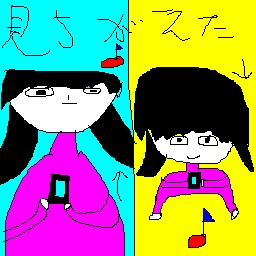

お風呂に貼る英語のやつ
SEO対策のために、画像サイズ削りまくったら画質が悪くなりすぎちゃった... 元画像が見つかれば近日中に取り替えます...
")
解答付き
・全 0 枚
・クイズ「画伯の展覧会」で出していない絵の置き場
・問題ない範囲で使っていい。むしろ推奨 (2ch/5ch, なんJ... なんかで晒すなど)
↓クリック(タップ)で閉じる/開く (初期値：全オープン)
SEO対策のために、画像サイズ削りまくったら画質が悪くなりすぎちゃった... 元画像が見つかれば近日中に取り替えます...
解答付き
踊っている人のおもしろgif画像 「踊っている人」")
|
モグモグのおもしろgif画像 「モグモグ」")
|
移動中のおもしろgif画像 「移動中」")
|
ダッシュ |
☆もしもしのおもしろgif画像 「もしもし」")
|
あけましておめでとうのLINEスタンプ画像 「あけましておめでとう」")
|
調子が悪いのLINEスタンプ画像 「調子が悪い」")
|
おたんじょうびおめでとう！！のLINEスタンプ画像 「おたんじょうびおめでとう！！」")
|
忙しいのLINEスタンプ画像 「忙しい」")
|
開かないのLINEスタンプ画像 「開かない」")
|
☆向かってますのLINEスタンプ画像 「向かってます」")
|
ダー |
喜びの舞のLINEスタンプ画像 「喜びの舞」")
|
どこ？のLINEスタンプ画像 「どこ？」")
|
おわった～のLINEスタンプ画像 「おわった～」")
|
ゆるしてのLINEスタンプ画像 「ゆるして」")
|
ひまのLINEスタンプ画像 「ひま」")
|
がんばれのLINEスタンプ画像 「がんばれ」")
|
いいね！のLINEスタンプ画像 「いいね！」")
|
ばいばいのLINEスタンプ画像 「ばいばい」")
|
助けてのLINEスタンプ画像 「助けて」")
|
変顔 |
☆怖っのLINEスタンプ画像 「怖っ」")
|
虫だー！のLINEスタンプ画像 「虫だー！」")
|
いってらっしゃいのLINEスタンプ画像 「いってらっしゃい」")
|
いやだのLINEスタンプ画像 「いやだ」")
|
☆かわいくてごめんのLINEスタンプ画像 「かわいくてごめん」")
|
くっさのLINEスタンプ画像 「くっさ」")
|
☆はっくしょんのLINEスタンプ画像 「はっくしょん」")
|
まだ？のLINEスタンプ画像 「まだ？」")
|
まかせますのLINEスタンプ画像 「まかせます」")
|
ちょっとまってのLINEスタンプ画像 「ちょっとまって」")
|
めんどのLINEスタンプ画像 「めんど」")
|
☆奇跡のLINEスタンプ画像 「奇跡」")
|
もぐもぐのLINEスタンプ画像 「もぐもぐ」")
|
☆月が綺麗ですねのLINEスタンプ画像 「月が綺麗ですね」")
|
だめ |
いってきますのLINEスタンプ画像 「いってきます」")
|
おはよー |
おーい |
おいっ！ |
OK！のLINEスタンプ画像 「OK！」")
|
おかえりのLINEスタンプ画像 「おかえり」")
|
おねがいのLINEスタンプ画像 「おねがい」")
|
おつかれ |
おやすみーのLINEスタンプ画像 「おやすみー」")
|
問題 |
☆はやくのLINEスタンプ画像 「はやく」")
|
雨です |
☆論破 |
ごめんのLINEスタンプ画像 「ごめん」")
|
集中していますのLINEスタンプ画像 「集中しています」")
|
ただいまー |
・・・のLINEスタンプ画像 「・・・」")
|
ありがとう！！のLINEスタンプ画像 「ありがとう！！」")
|
おわった |
うまいのLINEスタンプ画像 「うまい」")
|
うれしーのLINEスタンプ画像 「うれしー」")
|
ざんねんのLINEスタンプ画像 「ざんねん」")
|
きっも！ |
事件！のLINEスタンプ画像 「事件！」")
|
☆キターーーーーー！のLINEスタンプ画像 「キターーーーーー！」")
|
☆YES！のLINEスタンプ画像 「YES！」")
|
NO！ |
ブサイク |
かっこよ |
きもちい～のLINEスタンプ画像 「きもちい～」")
|
☆古っのLINEスタンプ画像 「古っ」")
|
勝った！のLINEスタンプ画像 「勝った！」")
|
☆負け... |
☆運動中のLINEスタンプ画像 「運動中」")
|
八方美人のLINEスタンプ画像 「八方美人」")
|
☆huh?のLINEスタンプ画像 「huh?」")
|
諸行無常 |
魑魅魍魎のLINEスタンプ画像 「魑魅魍魎」")
|
うらめしや～のLINEスタンプ画像 「うらめしや～」")
|
うらやまのLINEスタンプ画像 「うらやま」")
|
☆かわよのLINEスタンプ画像 「かわよ」")
|
つまんなのLINEスタンプ画像 「つまんな」")
|
☆うっそぴょーんのLINEスタンプ画像 「うっそぴょーん」")
|
☆きゃーのLINEスタンプ画像 「きゃー」")
|
カモーのLINEスタンプ画像 「カモー」")
|
☆さみしい...のLINEスタンプ画像 「さみしい...」")
|
絶体絶命のLINEスタンプ画像 「絶体絶命」")
|
☆思考中... |
クビのLINEスタンプ画像 「クビ」")
|
☆ひらめいたのLINEスタンプ画像 「ひらめいた」")
|
☆天才！！のLINEスタンプ画像 「天才！！」")
|
☆鉄拳制裁のLINEスタンプ画像 「鉄拳制裁」")
|
☆どんちゃん騒ぎ |
桜花爛漫のLINEスタンプ画像 「桜花爛漫」")
|
☆安全第一のLINEスタンプ画像 「安全第一」")
|
☆へぇー |
☆いつもより多く回っております |
☆どっち?のLINEスタンプ画像 「どっち?」")
|
手洗いうがいのLINEスタンプ画像 「手洗いうがい」")
|
鶏口牛後のLINEスタンプ画像 「鶏口牛後」")
|
鶴の一声 |
雀の千声 |
良薬は口に苦しのLINEスタンプ画像 「良薬は口に苦し」")
|
千里の道も一歩から |
☆決めポーズ |
☆縺ゅ°縺輔◆縺ｪのLINEスタンプ画像 「縺ゅ°縺輔◆縺ｪ」")
|
☆見ちがえた |
大好きのLINEスタンプ画像 「大好き」")
|
監視中...のLINEスタンプ画像 「監視中...」")
|
☆じーっのLINEスタンプ画像 「じーっ」")
|
金欠のLINEスタンプ画像 「金欠」")
|
金持ち |
☆アホのLINEスタンプ画像 「アホ」")
|
駆け抜けろ！ |
大型バイクのLINEスタンプ画像 「大型バイク」")
|
たのしーのLINEスタンプ画像 「たのしー」")
|
☆釣れたー |
☆池袋のLINEスタンプ画像 「池袋」")
|
☆爆発 |
☆柔軟に |
落雷 |
復活のLINEスタンプ画像 「復活」")
|
☆枯れたのLINEスタンプ画像 「枯れた」")
|
☆クソゲーのLINEスタンプ画像 「クソゲー」")
|
☆BANのLINEスタンプ画像 「BAN」")
|
☆激安 |
☆衰退...のLINEスタンプ画像 「衰退...」")
|
辛っーのLINEスタンプ画像 「辛っー」")
|
☆ぺろぺろのLINEスタンプ画像 「ぺろぺろ」")
|
☆前進 |
☆ポリコレ |
☆見てたのLINEスタンプ画像 「見てた」")
|
☆破産のLINEスタンプ画像 「破産」")
|
☆不幸 |
☆ラップ |
☆まさか |
☆消されるのLINEスタンプ画像 「消される」")
|
参考：百人一首.com
1.秋の田の かりほの庵の 苫をあらみ わが衣手は 露にぬれつつの「秋の田の かりほの庵の 苫をあらみ わが衣手は 露にぬれつつ」")
|
2.春すぎて 夏来にけらし 白妙の 衣ほすてふ 天の香具山 |
3.あしびきの 山鳥の尾の しだり尾の ながながし夜を ひとりかも寝む |
4.田子の浦に うち出でてみれば 白妙の 富士の高嶺に 雪は降りつつ |
5.奥山に 紅葉踏みわけ 鳴く鹿の 声きく時ぞ 秋は悲しき |
6.かささぎの 渡せる橋に おく霜の 白きをみれば 夜ぞふけにける |
7.天の原 ふりさけ見れば 春日なる 三笠の山に 出でし月かも |
8.わが庵は 都のたつみ しかぞすむ 世をうぢ山と 人はいふなり |
9.花の色は うつりにけりな いたづらに わが身世にふる ながめせしまに |
10.これやこの 行くも帰るも 別れては 知るも知らぬも 逢坂の関の「これやこの 行くも帰るも 別れては 知るも知らぬも 逢坂の関」")
|
11.わたの原 八十島かけて 漕ぎ出でぬと 人には告げよ 海人の釣舟 |
12.天つ風 雲の通ひ路 吹き閉ぢよ をとめの姿 しばしとどめむ |
13.筑波嶺の 峰より落つる 男女川 恋ぞつもりて 淵となりぬる |
14.陸奥の しのぶもぢずり 誰ゆゑに 乱れそめにし われならなくに |
15.君がため 春の野に出でて 若菜つむ わが衣手に 雪は降りつつ |
16.たち別れ いなばの山の 峰に生ふる まつとし聞かば 今帰り来む |
17.ちはやぶる 神代も聞かず 竜田川 からくれなゐに 水くくるとは |
18.住の江の 岸による波 よるさへや 夢の通ひ路 人めよくらむ |
19.難波潟 みじかき芦の ふしの間も 逢はでこの世を 過ぐしてよとや |
20.わびぬれば 今はた同じ 難波なる みをつくしても 逢はむとぞ思ふ |
21.今来むと 言ひしばかりに 長月の 有明の月を 待ち出でつるかな |
22.吹くからに 秋の草木の しをるれば むべ山風を 嵐といふらむ |
23.月見れば ちぢにものこそ 悲しけれ わが身一つの 秋にはあらねど |
24.このたびは ぬさもとりあへず 手向山 紅葉の錦 神のまにまにの「このたびは ぬさもとりあへず 手向山 紅葉の錦 神のまにまに」")
|
25.名にしおはば 逢坂山の さねかづら 人にしられで くるよしもがな |
のアメトーーク！のお題「ハイキック」")
のアメトーーク！のお題「床を拭く人」")
のアメトーーク！のお題「イルカショー」")
のアメトーーク！のお題「ウエディングケーキを切る新郎新婦」")
思考中...+エドヴァルド・ムンクでAIによる画風変換「思考中...+エドヴァルド・ムンク」")
|
安全第一+レオナルド・ダヴィンチでAIによる画風変換「安全第一+レオナルド・ダヴィンチ」")
|
さみしい+葛飾北斎 |
かわよ+パブロ・ピカソでAIによる画風変換「かわよ+パブロ・ピカソ」")
|
喜びの舞+ワシリー・カンディンスキーでAIによる画風変換「喜びの舞+ワシリー・カンディンスキー」")
|
駆け抜けろ!+エジプトの壁画でAIによる画風変換「駆け抜けろ!+エジプトの壁画」")
|
鉄拳制裁+アニメでAIによる画風変換「鉄拳制裁+アニメ」")
|
うっそぴょーん+KerasCVでAIによる画風変換「うっそぴょーん+KerasCV」")
|
八方美人+卑弥呼(肖像画) |
開かない+ジュゼッペ・アルチンボルドでAIによる画風変換「開かない+ジュゼッペ・アルチンボルド」")
|
がんばれ+パウル・クレーでAIによる画風変換「がんばれ+パウル・クレー」")
|
絶体絶命+ヨハネス・フェルメール |
以下mp4ファイル
がんばれ |
手洗いうがい |
駆け抜けろ！ |
たのしー |
の「私はロボットではありません」 「任天堂のキャラクターを選択")
左上：「魔法使い」 ドラクエ１など
右上：「キャンディ」 スマイルプリキュア
左下：「スティッチ」 ディズニー
右下：「キャンディ」 マリオRPG ←正解
そのうち「PictBear」/「Googleフォト(マークアップ)」から「ibisPaint」へ変えるかも
ニンフィアの「ibisPaintのテスト」 「ニンフィア」")
|
キティちゃんの「ibisPaintのテスト」 「キティちゃん」")
|
魔女の宅急便 |
ドラえもんの「ibisPaintのテスト」 「ドラえもん」")
|
竈門炭治郎の「ibisPaintのテスト」 「竈門炭治郎」")
|
を描く人が作るBlenderの「ドラえもん」")
を描く人が作るBlenderの「よく自分のスタンプに登場する女性」")
数字は編集で変えてください
を描く「年賀状」")
画伯の展覧会で公開しているものは除く
新宿のUnity版「画伯の展覧会」で使った絵 「新宿」")
|
富士山のUnity版「画伯の展覧会」で使った絵 「富士山」")
|
羊蹄山 |
サハラ砂漠のUnity版「画伯の展覧会」で使った絵 「サハラ砂漠」")
|
東京大学 |
大はしあたけの夕立 |
鳥獣戯画のUnity版「画伯の展覧会」で使った絵 「鳥獣戯画」")
|
ガルガンチュアのUnity版「画伯の展覧会」で使った絵 「ガルガンチュア」")
|
鮭(絵画) |
最後の晩餐 |
マリーアントワネットのUnity版「画伯の展覧会」で使った絵 「マリーアントワネット」")
|
武田信玄 |
マルクスのUnity版「画伯の展覧会」で使った絵 「マルクス」")
|
コロンブスのUnity版「画伯の展覧会」で使った絵 「コロンブス」")
|
田中正造のUnity版「画伯の展覧会」で使った絵 「田中正造」")
|
太宰治のUnity版「画伯の展覧会」で使った絵 「太宰治」")
|
山本五郎左衛門のUnity版「画伯の展覧会」で使った絵 「山本五郎左衛門」")
|
トラ |
鮭 |
パンダ |
馬のUnity版「画伯の展覧会」で使った絵 「馬」")
|
ペンギンのUnity版「画伯の展覧会」で使った絵 「ペンギン」")
|
織田信長 |
孔子 |
沖ノ鳥島のUnity版「画伯の展覧会」で使った絵 「沖ノ鳥島」")
|
五稜郭のUnity版「画伯の展覧会」で使った絵 「五稜郭」")
|
老いたギター弾き |
大政奉還のUnity版「画伯の展覧会」で使った絵 「大政奉還」")
|
星月夜のUnity版「画伯の展覧会」で使った絵 「星月夜」")
|
七人ミサキのUnity版「画伯の展覧会」で使った絵 「七人ミサキ」")
|
清少納言 |
紫式部 |
北里柴三郎のUnity版「画伯の展覧会」で使った絵 「北里柴三郎」")
|
渋沢栄一 |
雪女 |